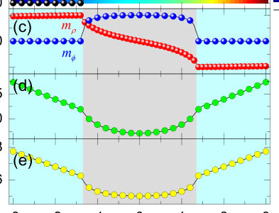

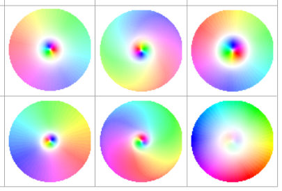
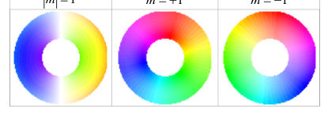

Authors: Zhenyu Wang, Liangrui Li, Xuejuan Liu, Xiansi Wang, Ruifang Wang, H. Y. Yuan
Type: theory · Category: other · PDF: https://arxiv.org/pdf/2608.10340v1
Analysis basis: full PDF text, analyzed in chunks
Topic relevance: analog quantum simulation 1/5 · driven-dissipative phase transition 1/5



Summary. This work analyzes the spin-wave excitation spectrum in ferromagnetic vortices stabilized by DMI. The authors demonstrate that the DMI causes a large, measurable splitting of azimuthal modes ($\Delta\omega$), an effect that remains robust even when vortex core contributions are removed. This deepens understanding of chiral magnetic textures and their dynamic response.
Why it may be interesting. While focused on magnetism, the study of collective excitations (spin waves) in confined magnetic textures provides a model system for understanding wave dynamics and topological effects in condensed matter systems relevant to quantum information storage or spintronics devices.
Main problem. To investigate the giant mode splitting of azimuthal spin waves in radial vortices, attributing this effect primarily to the Dzyaloshinskii-Moriya interaction (DMI) even when vortex core effects are absent.
Main result. The DMI induces a large and robust frequency splitting ($\Delta\omega$) in the spin wave spectrum that increases significantly with both the DMI constant ($D$) and the azimuthal mode index ($|m|$).
Method. Theoretical analysis using continuum models, deriving equations of motion from the LLG equation, and confirming results via micromagnetic simulations.
Model / system. The system is a ferromagnetic nanodisk or ring hosting magnetic vortices stabilized by interfacial DMI. The energy includes exchange, DMI, and dipolar interactions, governing spin-wave dynamics.
Key observables. Mode splitting ($\Delta\omega$) between $\pm m$ azimuthal modes; vortex core radius ($r_{VC}$); frequency spectra ($\omega$ vs. $D$).
Important parameters / regimes. DMI constant ($D$), mode index ($|m|$), and the geometry (disk vs. ring with a central hole).
Assumptions / limitations. Simplification of dipolar energy by retaining only surface charge contributions; linearization of the LLG equation for spin-wave analysis.
Figures summary. Figures illustrate vortex transitions based on DMI strength, show $\Delta\omega$ dependence on $D$, and demonstrate that mode splitting persists in rings (where VC effects are eliminated) due to DMI.
Paper structure. The paper progresses from establishing the physical model and Hamiltonian to deriving theoretical expressions for mode splitting. It then uses micromagnetic simulations to confirm that DMI is the dominant source of splitting, especially when comparing full disks to ring geometries.
Radial vortex is a topological spin texture stabilized by the interfacial Dzyaloshinskii-Moriya interaction (DMI) in ferromagnetic disks. Previous investigations have shown that the doublet splitting of azimuthal modes in traditional circular vortices arises from the coupling between azimuthal spin waves and vortex core (VC), an effect occurs only for azimuthal indices $m=\pm1$ and is absent for higher-order modes. Here, we present a giant mode splitting of azimuthal spin waves in radial vortices, even in the absence of the VC. This mode splitting arises from the DMI, which can be an order of magnitude larger than that induced by the VC. Moreover, the DMI-induced frequency splitting increases with both the DMI constant and mode index, reaching tens of GHz for higher-order azimuthal modes. Our results reveal a robust mechanism for mode splitting in chiral magnetic textures and deepen the fundamental understanding of the DMI effect on the spin-wave dynamics in confined magnets.
Authors: M. Abdul Hadi Shah, S. H. Naqib
Type: theory · Category: other · PDF: https://arxiv.org/pdf/2608.10768v1
Analysis basis: full PDF text, analyzed in chunks
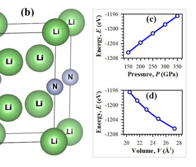
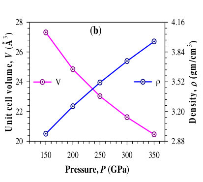
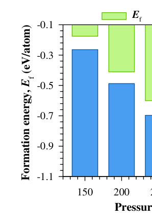
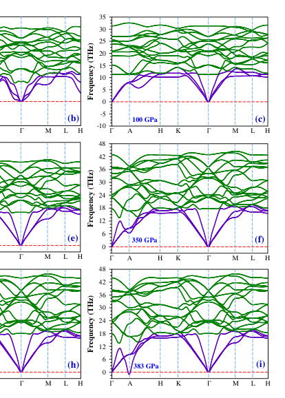
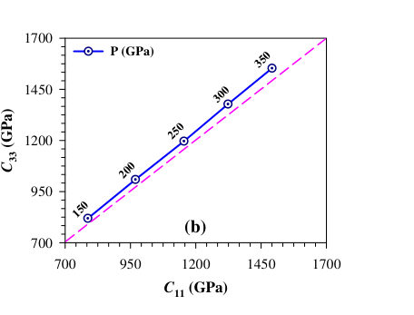
Summary. This theoretical study uses DFT calculations to map out the physical properties of the high-pressure electride superconductor Li5N. By analyzing structural stability, electronic structure, and mechanical response across 150–350 GPa, the authors predict that Li5N is a stable material with tunable multifunctional characteristics under extreme pressure.
Why it may be interesting. While focused on solid-state physics rather than quantum information, the study's rigorous application of first-principles methods to predict emergent properties (superconductivity, electride behavior) under extreme conditions is highly relevant for understanding strongly correlated or novel quantum materials systems.
Main problem. The study aims to theoretically investigate the physical properties of the electride superconductor Li5N under high pressure for potential multifunctional applications.
Main result. Li5N is predicted to be chemically and dynamically stable within the 150–350 GPa range, exhibiting metallic behavior and suggesting potential for tuning its properties through pressure.
Method. The research employs first-principles calculations using Density Functional Theory (DFT) with the PBEsol functional, supplemented by DFPT for phonon and optical response analysis.
Model / system. The physical system is Li5N, an electride solid, whose properties are calculated as a function of applied pressure in the range of 150–350 GPa. The calculations model structural changes, electronic band structure, and mechanical responses under extreme conditions.
Key observables. Lattice parameters (a, c), density ($ ho$), formation energy ($E_f$), elastic constants ($C_{ij}$), phonon dispersion curves, electronic DOS at the Fermi level, and optical dielectric function components ($\epsilon_1, \epsilon_2$).
Important parameters / regimes. Pressure range: 150–350 GPa; DFT cut-off: 500 eV; k-grid: $14 imes14 imes9$.
Assumptions / limitations. The calculations assume the validity of DFT and use established approximations like the Voigt–Reuss–Hill (VRH) approximation for polycrystalline properties.
Figures summary. Figures illustrate the variation of lattice parameters, density, and total energy with pressure. Stability is confirmed by positive phonon frequencies across the studied pressure range.
Paper structure. The paper follows a standard theoretical materials science structure: introduction defining the problem, detailed methodology (DFT/DFPT), presentation of structural stability results under varying pressure, electronic analysis (DOS, band structure), mechanical characterization (elastic constants), and finally, optical response analysis.
This study aims to unveil the physical properties of multifunctional Li5N electride under high pressure in the range of 150-350 GPa through first principles analysis within the density functional theory.
Authors: Hongyu Chen, Min Long, Chuang Chen, Zi Yang Meng
Type: theory · Category: other · PDF: https://arxiv.org/pdf/2608.10520v1
Analysis basis: full PDF text, analyzed in chunks
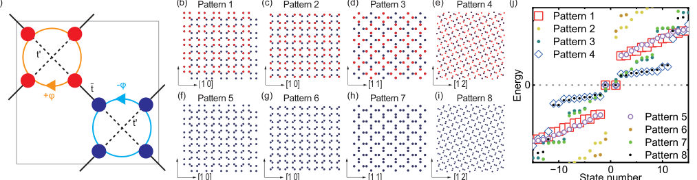
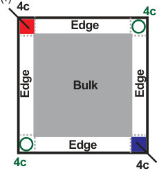
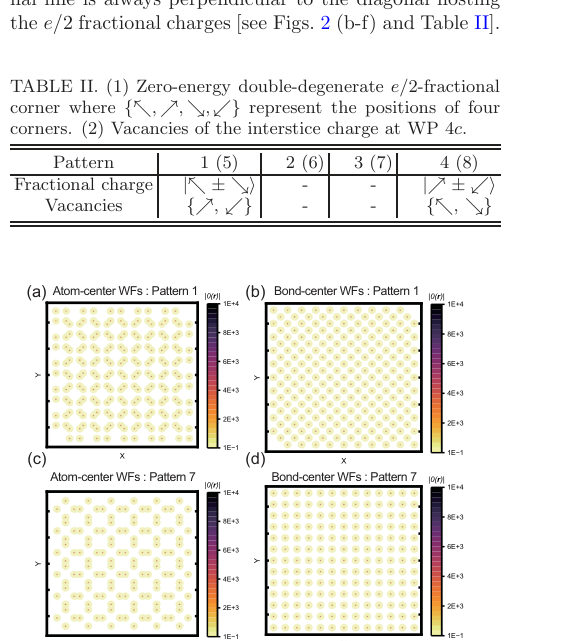
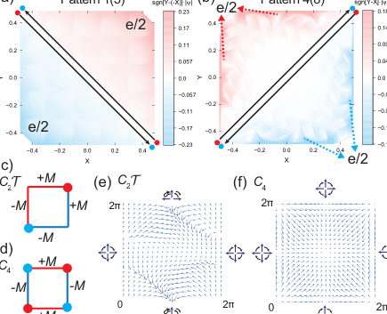
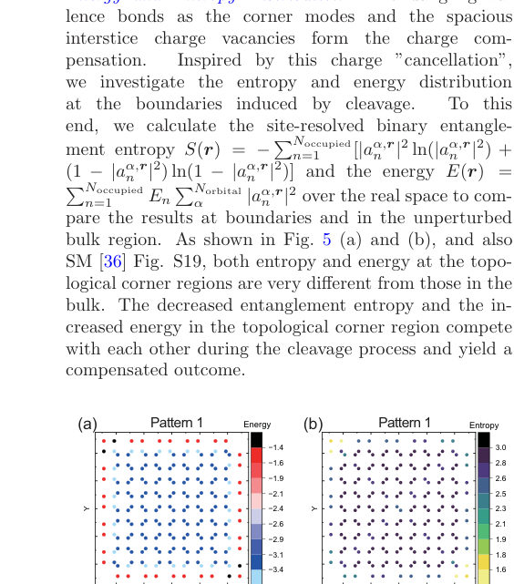
Summary. This work addresses the predictive gap in characterizing HOTIs formed by cleaving an OAI. By analyzing corner states, the authors demonstrate that fractional charges emerge when cleavage creates a balanced charge compensation involving interstice vacancies. The findings establish a strict geometric and electronic requirement—the orientation of dangling bonds—that dictates the existence of these higher-order topological features.
Why it may be interesting. The explicit link between geometric cleavage, charge compensation (fractional charge vs. vacancy), and the required directionality of electronic structure (dangling bonds) provides a powerful, physically grounded diagnostic tool for predicting topological phases in complex materials.
Main problem. The predictive power of topological quantum chemistry based on local charge profiles is insufficient for determining the electronic structure upon crystalline cleavage in Higher-Order Topological Insulators (HOTIs).
Main result. Cleaving an obstructed atomic insulator reveals a topological phase characterized by e/2 fractional charges at specific corners, balanced by complementary vacancies of interstice charge.
Method. The study employs tight-binding models and analyzes real-space properties using Wannier functions to map out the emergence of zero-energy corner modes dictated by dangling bond orientation.
Model / system. The research investigates HOTI phases within an Obstructed Atomic Insulator (OAI) modeled by a three-term hopping Hamiltonian. The analysis focuses on superlattice patterns and the resulting boundary conditions upon cleavage.
Key observables. Topological zero-energy double-degenerate e/2 fractional charges, complementary interstice charge vacancies, anisotropic evolution of the Dirac mass term, and lower entanglement entropy at topological corners compared to the bulk.
Important parameters / regimes. The system is analyzed across various superlattice patterns (1-8) controlled by parameters like magnetic flux and atomic arrangement.
Assumptions / limitations. The analysis assumes that the emergence of zero modes is strictly dictated by the exposure and directionality of dangling bonds acting as the mass term for a Dirac fermion.
Figures summary. Figures illustrate crystal cleavage evolution across 8 patterns, showing where zero-energy states appear; they also compare real-space charge distributions (atom vs. bond centers) and map energy/entanglement entropy differences between topological corners and the bulk.
Paper structure. The paper first identifies the limitations of current TQC methods for HOTI cleavage. It then models the system using a tight-binding Hamiltonian, analyzing various superlattice patterns to locate topologically non-trivial phases (patterns 1, 4, 5, 8). The core argument develops by linking fractional charges and vacancies to the massive Dirac fermion criterion, concluding with entropy/energy mapping.
Topological quantum chemistry based on local charge profiles lacks predictive power for the crystalline cleavage of higher-order topological insulators (HOTIs). By cleaving an obstructed atomic insulator, we discover a topological phase characterized by e/2 fractional charges localized at precisely half of the corners, while the remaining empty corners host complementary vacancies of interstice charge. These zero-energy charge-vacancies and topological corners form a spatially balanced geometry, confined separately by C2 rotation symmetry. Crucially, we demonstrate that the emergence of corner zero modes dictates that specific dangling bonds-acting as the mass of a Dirac fermion-must explicitly expose in, and subtly slope toward, the corner regions. This strict directionality is verified by the anisotropic evolution of the mass term within a (2+1)-dimensional parameter space. Moreover, we find that the topological corners acquire lower entanglement entropy compared to the bulk, a behavior opposite to that of the real-space energy distribution.